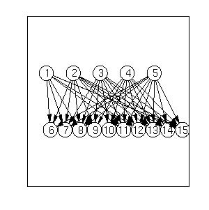

Visualizing graph structures in matlab
We discuss some methods for visualizing graphs/ networks, including automatic
layout of the nodes.
We assume the graph is represented as an adjacency matrix.
If using BNT, you can access the DAG using
G = bnet.dag;
Matlab's biograph function
The Mathworks computational biology toolbox
has many useful graph related functions, including visualization.
Click
here
for a demo.
Cemgil's draw_graph
You can visualize an arbitrary graph (such as one learned using the
structure learning routines) with Matlab code written by
Ali Taylan Cemgil
from the University of Cambridge.
A modified version of this code
is here
(this is already bundled with BNT).
Just type
draw_graph(G);
For example, this is the output produced on a
random QMR-like model:

Pajek
Pajek
is an excellent, free Windows program for graph layout.
Use adj2pajek2.m to convert a graph to the
Pajek file format.
Then Choose File->Network->Read from the menu.
AT&T Graphviz
graphhviz
is an
open-source graph visualization package from AT&T.
Use
graph_to_dot
to convert an adjacency matrix to
the AT&T file format (the "dot" format).
You then use dot to convert it to postscript:
graph_to_dot(G, 'filename', 'foo.dot');
dot -Tps foo.dot -o foo.ps
ghostview foo.ps &